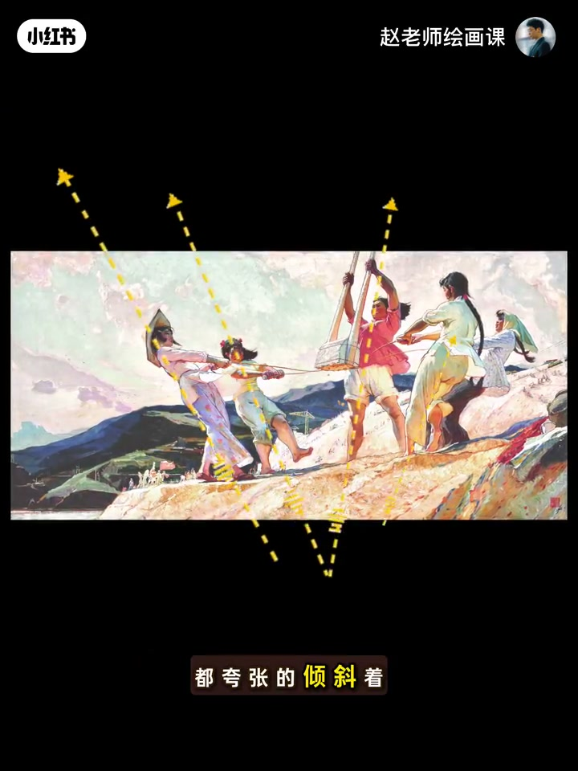
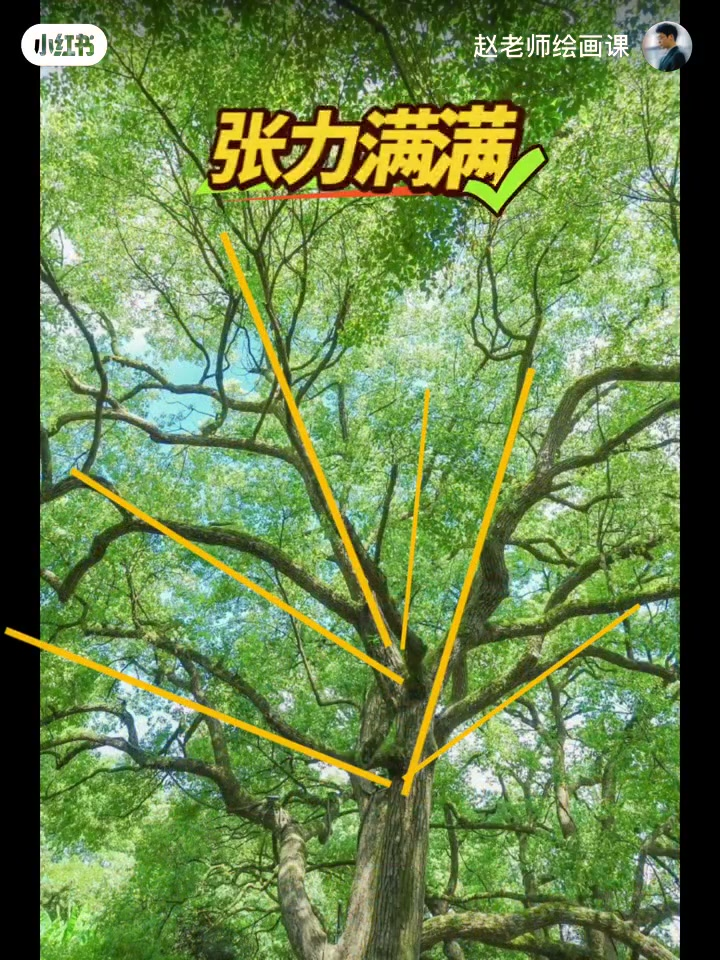
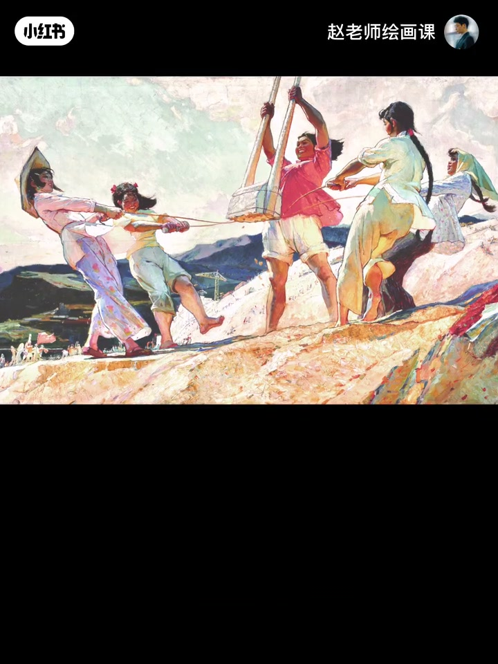
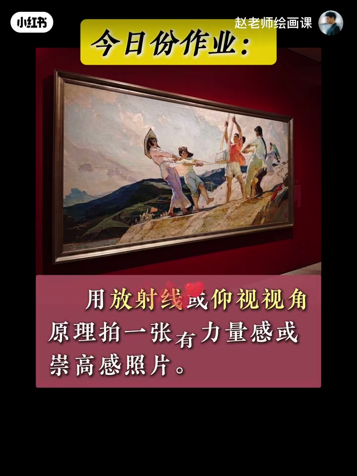

内容要点
真实打夯现场对照画家王文斌笔下的打夯：画为何比视频更有劲？人物姿态夸张倾斜成向中心散开的放射状，中间夯杵直指土地，爆发力仿佛破土而出——功劳在放射线构图。迁移到树冠、晚霞云层与人像舒展倾斜；第二招把手机抬高过视平线微仰，得到英雄视角，米开朗基罗用它雕大卫，万物皆可崇高。作业：用放射线或仰视拍一张有力量感的照片。
知识结构
夸张倾斜围成放射状＋夯杵下指＝爆发力。
树冠放射线、云层／光放射线、人像舒展倾斜。
高于视平线微仰＝英雄视角；作业交一张。
力量感可设计：先找／造放射线，再必要时抬高机位微仰——动态倾斜＋崇高视角叠加以出「劲儿」。
00:00-00:41打夯画：放射线放出爆发力
先对照真实打夯与王文斌画作，再问为何画比视频更有劲。画中人物姿态夸张倾斜，围成向中心散开的放射状；中间夯杵直指下方土地，仿佛能听到爆发力瞬间破土。这一切来自放射线构图。
00:25 黄虚线箭头把「夸张的倾斜」画成可指认结构。

00:41-01:06树、霞、人像：同一原理
随手拍树可能平淡无奇；观察树冠散开、强调树枝放射线，立刻有力很多。耀眼晚霞别只盯色彩，多留意云层走向与光的放射线。拍人别呆站，手臂舒展、身体倾斜，感觉马上出来。
00:55 「张力满满」树冠放射线是迁移示范。

01:06-02:18仰视英雄视角与今日作业
第二点：手机抬高到比视平线高的位置，用微微仰视看这幅画——姑娘们更高大更有气质。这是仰视下的英雄视角；米开朗基罗用它雕刻大卫，也可拍人、宠物、美食，万物皆可崇高感。
作业：用放射线或仰视视角拍一张有力量感或崇高感的照片，评论区交作业。下期预告形状秘密与构图系统课。


完整转录（47段）
以下文本由 Whisper medium 模型自动转录，可能存在少量识别误差，已尽可能修正。
这是真实的大汤
这是画家王文斌笔下的大汤
为什么一张画能比视频看起来还有劲儿
你看 化妆所有人的姿态都夸张的倾斜着
围成向中心散开的放射状
中间的夯实直指下方的土地
仿佛能听到
爆发力瞬间破坏而出
这一切都来自于放射线构图的功劳
那了解了这个原理
好 我们试着运用一下
这是一棵树
随手一拍 银弹无期
但如果你观察树冠散开
强调树枝形成的放射线
是不是有利很多
耀眼的晚霞别只关注色彩
多留意云层的走向
光的放射线
画面一定会出乎意料
拍人像也是一样
如果呆呆的站着
再甜美的笑容也没有感染力
试着让手臂舒展 身体倾斜
感觉马上就出来了
第二点 来 跟我一起
把手机抬高到比视见率高的位置
用微微的仰视的角度来看这幅画
是不是感觉画中的姑娘们更高大
更有气质了
这就是仰视下的英雄视角
米开朗基罗用它来雕刻大位
我们也可以用它来拍人
拍宠物
拍美食
万物皆可崇高感
今日份实操作业
用放射线或仰视视角
拍一张有力量感或崇高感的照片
我在评论区等着大家的美照
其实这幅画的构图技巧远不止这些
下期我们继续破译画中形状的秘密
如果你想系统掌握这种画平凡为神奇的构图原理
全面提升创作与审美能力
别错过我10月20号开班的构图系统课
详情请戳首页置顶笔记
拜拜